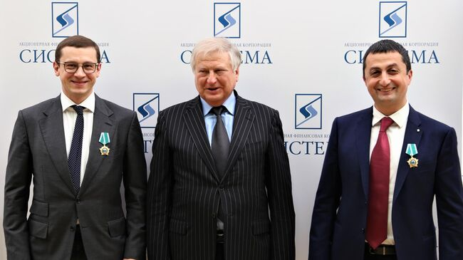

АФК "Система" — крупнейшая в России и СНГ публичная диверсифицированная холдинговая компания, объединяющая высокотехнологичные активы в различных секторах экономики.
Компания концентрируется на следующих стратегических направлениях:
Телекоммуникации и технологии - МТС, МГТС
Микроэлектроника - "Микрон", "Элемер"
Медицина и биотехнологии - Группа "Медси", "Биннофарм"
Лесопромышленный комплекс - "Сегежа Групп"
Ритейл и потребительские товары - "Детский мир", "О'КЕЙ"
АФК "Система" была основана в 1993 году. Ключевые вехи развития:
1990-е - формирование холдинговой структуры, первые инвестиции в телекоммуникации
2000-е - выход на IPO, расширение портфеля активов
2010-е - развитие высокотехнологичных направлений, цифровая трансформация
2020-е - фокус на ESG-трансформацию, развитие микроэлектроники и биотехнологий
Инновации - развитие технологий будущего
Ответственность - перед акционерами, сотрудниками и обществом
Устойчивое развитие - баланс экономических, экологических и социальных факторов
Активы под управлением - 1,5 трлн рублей
География присутствия - 11 стран
Более 50 дочерних компаний
Лидер в рейтингах корпоративного управления
2023 - Лучшая холдинговая компания по версии Forbes
2022 - Лидер ESG-рейтингов
2021 - Премия "Компания года" в номинации "Корпоративное управление"
Сегодня АФК "Система" - это устойчивый многопрофильный холдинг, сочетающий в себе передовые технологии и социальную ответственность, с активами, представленными в различных секторах экономики.
Подробнее на официальном сайте: www.sistema.ru